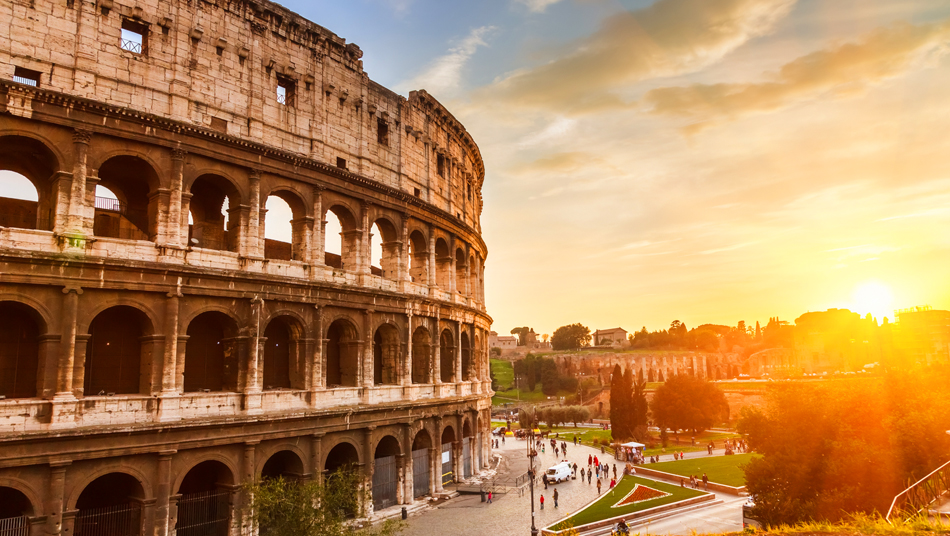
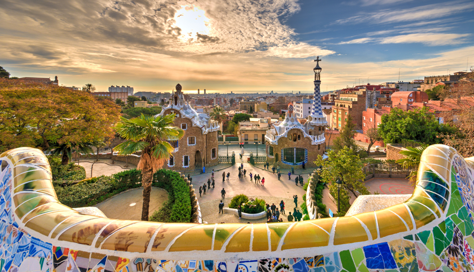

Det er mange land i verden og alt for dårlig tid til å oppleve alt. Her på denne siden vil du få litt informasjon om land du bør besøke og hvorfor. Du vil få vite om kjente turist attractioner og litt om hva som gjør landet du velger spesielt.
Her kan du klikke på bildet som tilsvarer landet du vil høre mer om
 Håper denne siden hjalp deg!